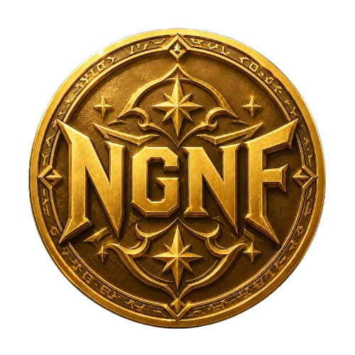

Присоединиться
Присоединиться
🛩️ × Владелец
Главные люди сервера, которые отвечают за развитие сервера, порядок и общую атмосферу.
Игровое сообщество для общения, совместных игр и отдыха. Заходи, находи друзей, играй с нами и становись частью No Games No Fun.
Система статусов и привилегий сервера. Здесь видно, какие возможности открывает каждая роль.
Личный прогресс участника: опыт, уровни, активность и награды за участие в жизни сервера.
Короткий набор принципов, который помогает держать сервер спокойным, понятным и удобным для всех.

ЭкономикаСистема монет и казино. Здесь можно зарабатывать валюту, покупать привилегии и играть в 5 казино-игр.
Общее представление о No Games No Fun
Ищи людей для коопа, PvP, выживания и обычных игровых вечеров.
На сервере регулярно проводятся разные ивенты.
Получай ранги, роли, ежедневные бонусы и награды за активность.
Главные люди сервера, которые отвечают за развитие сервера, порядок и общую атмосферу.
Следит за сервером, помогает участникам и решает важные вопросы сервера.
Поддерживает порядок в чатах, контролирует правила и помогает новым участникам.
Поддерживает порядок в чатах, контролирует правила и помогает новым участникам.
Отдельная роль для участников, кто бустит сервер.
Бонусы:
Напишите в #💾команды команду !my-booster
Роль привилегия выше Premium. Выдается за особый вклад, активность или поддержку сервера.
Бонусы:
Напишите в #💾команды команду !my-diamond
Роль привилегия. Выдается за донат или за актив
Бонусы:
Напишите в #💾команды команду !my-premium
Роль привилегия.Выдается за донат или за актив
Бонусы:
Напишите в #💾команды команду !my-vip
Обычная роль участника сообщества No Games No Fun.
На сервере можно получать EXP за активность в текстовых и голосовых каналах. Чем больше опыта вы набираете, тем выше становится ваш уровень. При достижении нужного количества EXP выдаётся новая роль.
!rank — посмотреть свой уровень в #Команды
!formula — узнать формулу опыта в #Команды
Запрещен спам и флуд: повтор сообщений, символов, картинок, бессмысленные сообщения и засорение чата.
Запрещен оффтоп в тематических каналах.
Запрещено беспричинное массовое упоминание участников и ролей.
Запрещены провокации, оскорбления, токсичность и неадекватное поведение.
Запрещена дискриминация, травля и предвзятое отношение к участникам.
Запрещено публиковать NSFW, шокирующий, незаконный или запрещенный правилами Discord контент.
Запрещено распространять личную информацию участников без их согласия.
Запрещены оскорбительные, провокационные никнеймы, аватарки и статусы, а также копирование других участников.
Запрещена реклама сторонних серверов, товаров, услуг и подозрительных сайтов.
Запрещено мешать общению в голосовых каналах: крики, шумы, саундпады, перебив и троллинг.
Запрещено спорить с персоналом в агрессивной форме, провоцировать конфликты из-за наказаний или мешать работе модерации.
Запрещено использовать твинк-аккаунты в экономике, ивентах, розыгрышах и любых системах наград.
Запрещён абуз экономики, багов, команд, наград, ивентов и любых систем сервера для получения нечестной выгоды.
Персонал может принять меры в зависимости от тяжести нарушения.
На сервере действует собственная система экономики. Участники могут зарабатывать монеты, накапливать их на балансе, переводить другим игрокам, покупать товары и привилегии в магазине, а также использовать валюту в казино.
!balance
Показывает текущее количество монет на вашем аккаунте.
!top
Показывает рейтинг самых богатых участников сервера по количеству накопленных монет.
!send
Позволяет перевести часть своих монет другому участнику сервера. Для использования переводов на балансе должно находиться минимум 1000
Монеты можно получать с помощью экономических команд. У каждой команды есть собственная награда и время восстановления.
!daily
Получайте фиксированную награду за ежедневную активность.
!mine
Отправляйтесь добывать монеты. Размер награды определяется случайным образом.
!crime
Рискованный способ заработка. При успехе вы получите монеты, однако существует вероятность получить штраф.
!income
Команда получения доступного дохода в системе экономики сервера.
Заработанные монеты можно использовать в магазине сервера. Там доступны различные товары и привилегии, которые можно приобрести за внутреннюю валюту сервера.
!shop
Показывает доступные товары, роли и другие предложения, которые можно приобрести за NGNF Coin.
!buy
Используется для покупки выбранного товара из магазина сервера.
В казино No Games No Fun доступно пять игр. Вы можете поставить свои монеты и попытаться увеличить баланс. Результат игры зависит от правил выбранного режима.
!slots <ставка>
Классические игровые слоты.
Пример:!slots 250
!crash <ставка> <множитель>
Сделайте ставку и выберите множитель для автоматического вывода.
Пример:!crash 250 2.5
!coinflip <ставка> <сторона>
Выберите сторону монеты и сделайте ставку.
Пример:!coinflip 100 орёл
!dice <ставка>
Испытайте удачу в игре с кубиком.
Пример:!dice 250
!roulette <ставка> <выбор>
Сделайте ставку на выбранный результат рулетки.
Пример:!roulette 100 red
!bj <ставка>
Классическая карточная игра Blackjack.
Пример:!bj 100
Перед игрой можно ознакомиться с подробными правилами каждого режима казино.
!slots-info
!coinflip-info
!dice-info
!roulette-info
!bj-info
!crash-info
Здесь собраны основные пользовательские команды сервера No Games No Fun. Команды разделены по категориям для удобного поиска.
!rank
Посмотреть свой текущий ранг и прогресс.
!leaders
Посмотреть таблицу лидеров сервера.
!bonus
Получить ежедневный бонус.
!bonus-info
Посмотреть информацию о ежедневном бонусе.
!bonus-week
Получить еженедельный бонус.
!bonus-week-info
Посмотреть информацию о еженедельном бонусе.
!find-dbd
Найти игроков для Dead by Daylight, упомянув игровую роль.
!find-pz
Найти игроков для Project Zomboid, упомянув игровую роль.
!booster
Посмотреть информацию о роли Booster.
!custom-role
Посмотреть информацию о кастомной роли.
!diamond
Посмотреть информацию о роли Diamond.
!premium
Посмотреть информацию о роли Premium.
!vip
Посмотреть информацию о роли VIP.
!formula
Посмотреть информацию о системе начисления опыта.
!my-booster
Посмотреть информацию о своих бонусах Booster.
!my-diamond
Посмотреть информацию о своих бонусах Diamond.
!my-premium
Посмотреть информацию о своих бонусах Premium.
!my-vip
Посмотреть информацию о своих бонусах VIP.
!путь
Открыть систему квестов для начинающих участников сервера.
!mini-games
Посмотреть список всех доступных мини-игр.
!кнб
Сыграть в «Камень, ножницы, бумага».
!тиктак
Сыграть в «Крестики-нолики».
!randomplayer
Выбрать случайного игрока из списка.
!roll
Получить случайное число.
!secret-roles
Получить подсказки для поиска секретных ролей.
No Games No Fun появился в 2020 году. Создание и развитие дискорд серверов всегда было одним из моих увлечений, и уже тогда у NGNF была та же основная идея, что и сегодня: создать единое игровое сообщество для людей из разных игр, а не строить весь сервер вокруг одного проекта.
В те годы всё выглядело совсем иначе. У меня было гораздо меньше опыта в управлении дискорд сообществами, сам сервер был устроен проще, а участников поначалу было совсем немного. Постепенно мы начали расти, в основном приглашая людей из Майна, и в один из наиболее активных периодов на сервере было как минимум 85 участников.
Однако затем наступил сложный период. Из-за отключений социальных сетей в стране я примерно месяц практически не мог следить за сервером и заниматься его развитием. За это время активность резко упала, люди постепенно разошлись, и в итоге сервер практически полностью умер.
После этого я несколько раз пытался его возродить, но ни одна из попыток не привела к полноценному возвращению активности. Из участников того самого первого периода до сегодняшнего дня с нами остался только Джерри.
Позже началась другая глава моей истории с дискорд сообществами. Я присоединился к серверу одного ютубера по Dead by Daylight Mobile как обычный участник, а со временем дошёл до позиции второго владельца и в определённый период фактически получил полный контроль над сервером. На тот момент это было уже крупное сообщество примерно на 2000 участников.
Но из-за трагических обстоятельств в моей личной жизни мне пришлось передать управление обратно первоначальному владельцу. Впоследствии он неожиданно удалил весь сервер, не обсудив это с остальными участниками и командой. Для сообщества, которое существовало долгое время и объединяло тысячи людей, это стало концом целой эпохи.
К тому моменту многие из нас уже хорошо знали друг друга и продолжали общаться за пределами сервера. Поэтому тех, с кем сохранился контакт, мы пригласили в старый No Games No Fun. Тогда сюда перешло примерно 80–100 человек.
Однако полноценным развитием NGNF в тот момент уже практически никто не занимался, и спустя некоторое время сервер снова погрузился в длительную спячку. В следующие годы предпринимались отдельные попытки вернуть его к жизни, но ни одна из них не смогла запустить полноценное развитие сообщества.
Ситуация изменилась примерно в апреле 2026 года, когда мы с Даней решили серьёзно взяться за восстановление и продвижение No Games No Fun. Даня смог пригласить большое количество активных людей, а затем к развитию снова активно подключился я.
Мы вернулись к той самой методике, с которой когда-то всё начиналось: знакомились с людьми в играх, в которые играли сами, приглашали их в сообщество и постепенно формировали вокруг сервера новую аудиторию.
Так начался нынешний этап истории No Games No Fun.
На момент написания этого текста сервер уже вырос до 220 участников — больше, чем когда-либо прежде. Но за прошедшие годы изменились не только цифры. Появился опыт, новые идеи и гораздо более серьёзный подход к развитию проекта.
Сегодня No Games No Fun остаётся игровым сообществом для людей с разными интересами.
Здесь можно общаться в чатах, знакомиться с новыми людьми, находить друзей и команду для совместной игры, а также участвовать в жизни сервера.
Мы не хотим ограничивать NGNF одной конкретной игрой. Наша идея заключается в том, чтобы человек мог прийти сюда ради одной игры, познакомиться с людьми из других игровых сообществ и со временем открыть для себя что-то новое.
Отдельное место в жизни сервера занимают ивенты и различные активности. Мы регулярно стараемся придумывать новые события для участников, а в некоторых из них победители могут получить не только серверные награды, но и реальные денежные призы.
Наша задача сделать так, чтобы человек не просто зашёл на сервер на несколько минут, а действительно нашёл здесь людей и атмосферу, ради которых ему захочется остаться.
Основной способ развития No Games No Fun это живое приглашение людей из игровых сообществ.
Мы знакомимся с игроками, общаемся с ними и приглашаем тех, кому действительно может быть интересно стать частью нашего сообщества.
Сегодня развитием NGNF занимаюсь уже не только я. У сервера появилась собственная команда, которая помогает привлекать новых участников и поддерживать дальнейший рост проекта.
Одновременно с ростом аудитории мы продолжаем развивать и сам сервер: добавляем новые возможности и внутренние системы, проводим ивенты и стараемся создавать больше причин участвовать в жизни сообщества.
Мы хотим продолжать развивать и продвигать No Games No Fun, привлекать новых людей и увеличивать активность. Однако для нас важны не только цифры.
Главная цель создать не очередной типичный дискорд сервер, похожий на сотни других, а собственное узнаваемое игровое сообщество.
Мы хотим, чтобы человек, впервые зайдя на NGNF, практически сразу увидел что-то необычное и смог найти здесь что-то для себя: совместные игры, новые знакомства, внутреннюю экономику, ивенты, систему развития или просто комфортное место для общения.
По мере развития сервера будут появляться новые системы, идеи и активности. Мы хотим постепенно сформировать собственную атмосферу и сделать No Games No Fun сообществом, которое сложно перепутать с каким-либо другим сервером.
За свою историю No Games No Fun несколько раз переживал рост, упадок и попытки начать всё заново.
Но во все периоды главным элементом сервера оставались люди.
Именно участники, которые здесь общаются, знакомятся, играют вместе, участвуют в ивентах и помогают развивать сообщество, в конечном итоге определяют, каким становится NGNF.
Сегодня No Games No Fun снова развивается.
И мы намерены сделать этот этап самым важным в истории сервера.